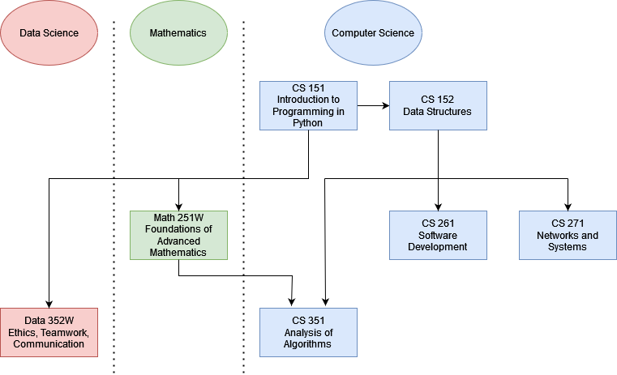

BACHELORS OF SCIENCE
Five (5) courses in Computer Science, one (1) course in Data Science, one (1) course in Mathematics, three electives in these majors or approved by advisor.
- CS 151 : Intro to Programming in Python
- CS 152 : Data Structures
- MATH 251W: Foundations of Advanced Mathematics
- CS 261 : Software Development
- CS 271 : Networks and Systems
- CS 351 : Analysis of Algorithms
- DATA 352W: Ethics, Teamwork, Communications
Dependency Graph

MINOR
CS 151/152 and three electives in these majors or approved by advisor.
CREDIT CONVERSION
Consult the
credit conversion chart.